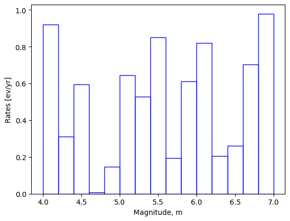

Stochastic Events Set Generation
This notebook shows how to generate a stochastic event set from an OQ Engine area source with known geometry (i.e. a polygon in a shapefile or geojson), a magnitude-frequency distribution (MFD), and a hypocentral depth distribution (optionally specified by means of an OQ Engine probability mass function).
For a simple and straightforward SES generation, we develop a couple of functionalities in openquake.man.ses_utils. If you prefer to perform full SES generation, you might follow the event-based PSHA calculation described in the Seismic Source Module.
[1]:
import pandas as pd
import numpy as np
import os
import matplotlib.pyplot as plt
from openquake.man.ses_utils.ses_generator import ses_from_area_source
from openquake.hazardlib.pmf import PMF
from openquake.hazardlib.mfd import TruncatedGRMFD
To generate SES with this workflow, first you need to determine which MFD you will use. Here, we prefer to use TruncatedGRMFD to show another MFD than previously showed one in the first notebook.
This distribution is described by means of a minimum minMag and maximum magnitude maxMag and by the \(a-\) and \(b-\)values of the Gutenberg-Richter relationship.
[2]:
magnitude_step = 0.2
magnitudes = np.arange(4.1, 7.0, magnitude_step)
rates = np.random.rand(magnitudes.size)
mfd = TruncatedGRMFD(4.0, 7.0, 0.1, 4.5, 1.0) # min_mag, max_mag, bin_width, a_val, b_val
The figure below shows the MFD obtained using the parameters of the considered example.
[3]:
_ = plt.bar(magnitudes, rates, width=magnitude_step, fc='none', ec='blue')
_ = plt.xlabel('Magnitude, m')
_ = plt.ylabel('Rates [ev/yr]')

You can use ses_from_area_source utility to produce 1000 years SES by sampling earthquake ruptures from configured seismic sources using Monte Carlo sampling [16].
Apart from MFD, you need to define:
an area source as a polygon file described in the Data Format section,
hddwhich is an instance of :class:openquake.hazardlib.pmf.PMFdescribing the hypocentral depth distribution.
[5]:
# Create the stochastic event set, i.e. a set of ruptures
fname = "../data/poly.geojson"
hdd = PMF([(0.3, 5.0), (0.7, 10.0)])
ses = ses_from_area_source(fname, mfd, hdd)
[6]:
df_data = []
for r in ses:
real_rupture = r.rupture
hypo = real_rupture.hypocenter
df_data.append({
"rupture_id": r.id,
"magnitude": r.mag,
"longitude": hypo.longitude,
"latitude": hypo.latitude,
"depth": hypo.depth,
"tectonic_region": r.tectonic_region_type
})
df_ses = pd.DataFrame(df_data)
df_ses.head(10)
#Save
output_dir = "../output/ses_generation"
os.makedirs(output_dir, exist_ok=True)
csv_file_path = os.path.join(output_dir, "stochastic_event_set.csv")
df_ses.to_csv(csv_file_path, index=False)
print(f"Done! Saved to: {csv_file_path}")
Done! Saved to: ../output/ses_generation/stochastic_event_set.csv